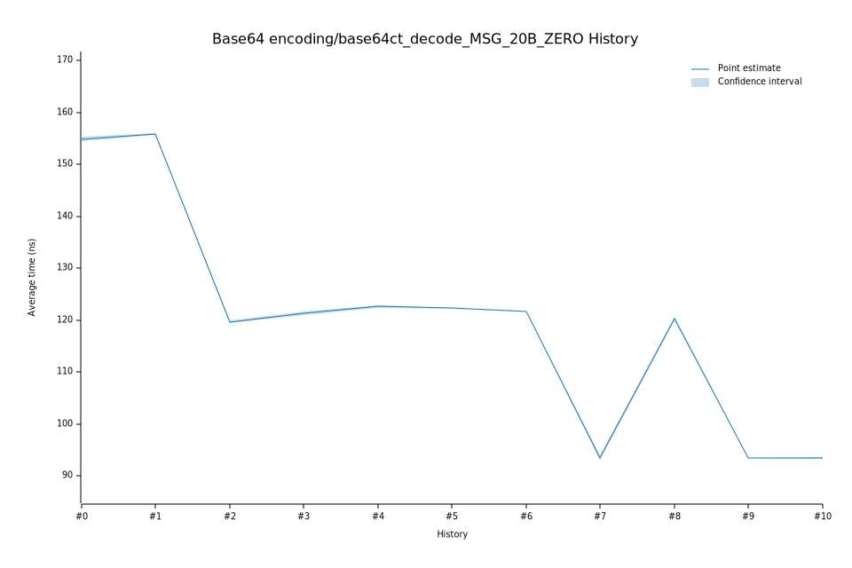

# 42023-02-09T13:16:53Z
|
Lower Bound |
Estimate |
Upper Bound |
| Value: |
122.37ns |
122.64ns |
122.90ns |
| Change in Value: |
+0.9064% |
+1.2322% |
+1.5591% |
No change in performance detected.
# 32023-02-08T19:24:47Z
|
Lower Bound |
Estimate |
Upper Bound |
| Value: |
120.99ns |
121.33ns |
121.63ns |
| Change in Value: |
+0.8770% |
+1.2699% |
+1.6505% |
No change in performance detected.
# 22022-12-05T09:12:24Z
|
Lower Bound |
Estimate |
Upper Bound |
| Value: |
119.40ns |
119.65ns |
119.91ns |
| Change in Value: |
-23.371% |
-23.148% |
-22.886% |
No change in performance detected.
# 12022-11-14T12:27:48Z
|
Lower Bound |
Estimate |
Upper Bound |
| Value: |
155.62ns |
155.85ns |
156.08ns |
| Change in Value: |
+0.3584% |
+0.6559% |
+0.9529% |
No change in performance detected.
# 02022-11-04T14:04:27Z
|
Lower Bound |
Estimate |
Upper Bound |
| Value: |
154.45ns |
154.89ns |
155.33ns |